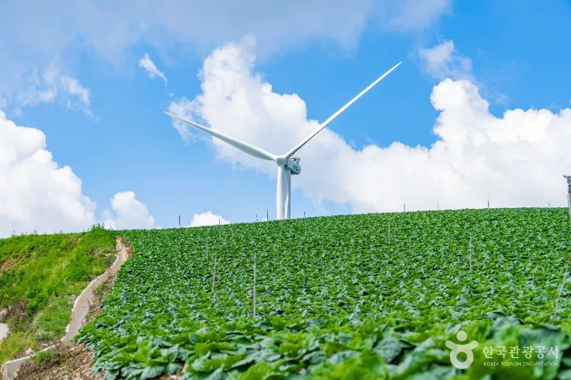
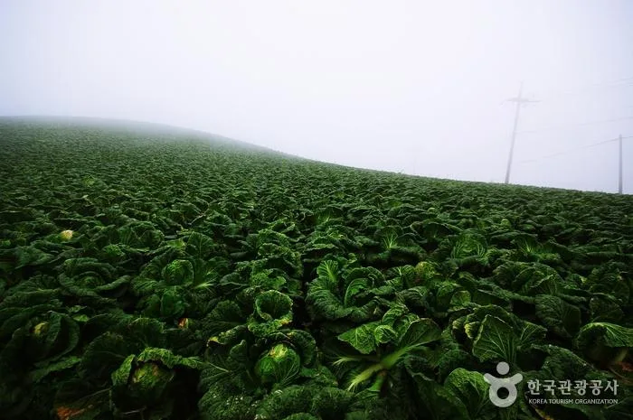
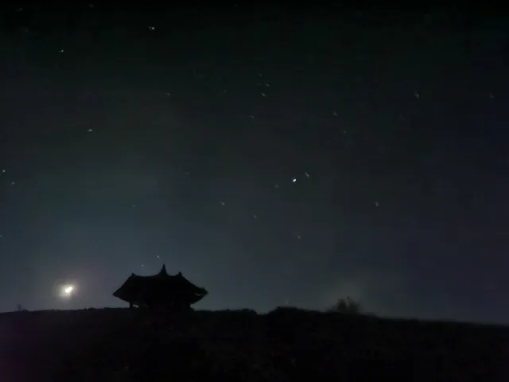
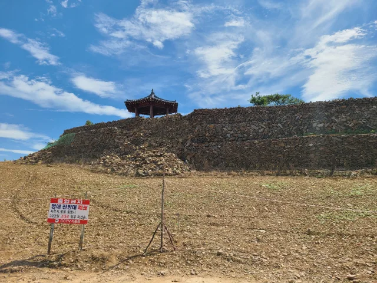
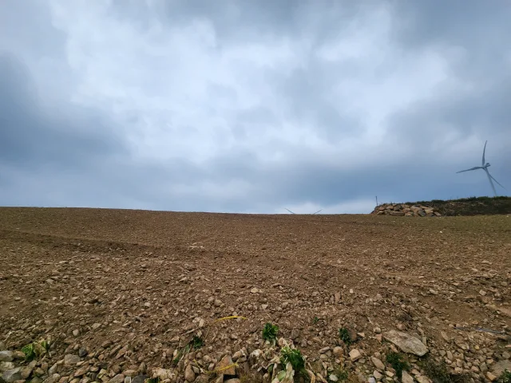

▲ 강릉 안반데기. 해발 1,100m 능선을 따라 배추밭이 이어진다
안반데기라는 이름은 지형에서 왔습니다. 떡메를 칠 때 아래에 받치는 두툼한 나무판을 안반이라고 합니다. 산 정상부가 칼날처럼 뾰족하지 않고 안반처럼 넓고 평평하게 퍼져 있어 붙은 이름입니다.
그 평평한 땅이 전부 배추밭입니다. 해발 1,100m 능선에 조성된 고랭지 채소 재배지이고, 1960년대부터 개간이 시작돼 지금까지 실제로 농사가 이어지고 있습니다.
1. 떡판을 닮은 땅
이 일대는 원래 농사에 적합한 땅이 아니었습니다. 해발 1,000m를 넘는 고지대는 기온이 낮고 바람이 강합니다. 그런데 바로 그 조건이 여름 배추 재배에는 유리하게 작용합니다. 평지에서 배추가 자라기 어려운 한여름에 이곳에서는 정상적으로 결구가 됩니다.

▲ 능선을 따라 늘어선 풍력발전기와 배추밭. 강한 바람이 이 지형의 특징이다 ⓒ 대한민국 구석구석(한국관광공사)
능선을 따라 풍력발전기가 서 있는 것도 같은 이유입니다. 바람이 강하고 일정하기 때문입니다. 배추밭과 풍력발전기가 한 프레임에 들어오는 구도가 이곳의 대표적인 장면이 된 배경입니다.

▲ 운무가 밭 위로 흐르는 모습. 고도 탓에 구름이 지면 높이로 지난다 ⓒ 대한민국 구석구석(한국관광공사)
운해는 부산물입니다. 해발 1,100m는 구름이 지나는 높이여서, 아래쪽 골짜기에 구름이 깔리면 밭이 구름 위에 뜨는 것처럼 보입니다. 일출 시각에 이 조건이 겹치는 날이 사진가들이 노리는 타이밍입니다.
2. 별을 보러 오는 사람들
안반데기가 널리 알려진 결정적 계기는 밤하늘이었습니다. 주변에 도시가 없어 광공해가 거의 없고, 고도가 높아 대기가 맑습니다. 은하수 촬영지로 소개되면서 야간 방문객이 급증했습니다.

▲ 안반데기의 밤. 주변 광공해가 적어 별 관측 조건이 좋다 ⓒ 강원도민일보

▲ 능선 위 전망 시설. 일출과 야경 촬영 지점으로 이용돼 왔다 ⓒ 강원도민일보
문제는 차와 함께 온 것들이었습니다. 밤새 머무는 차박 인구가 늘면서 쓰레기 투기, 취사, 사유지 무단 진입, 밭 훼손 문제가 이어졌습니다. 경작지 한복판에 차가 들어가 흙을 다지면 그해 농사에 직접 피해가 갑니다.
3. 지금은 규칙이 달라졌다
결국 시설이 정리되는 방향으로 갔습니다. 대표 촬영 지점이던 멍에전망대가 철거됐고, 주차와 야간 이용에 대한 관리가 강화됐습니다. 예전 후기에 나오는 동선이 지금은 그대로 통하지 않을 수 있습니다.

▲ 수확기 이후의 밭. 이곳은 관광지이기 이전에 경작지다 ⓒ 강원도민일보
방문 전 확인할 것은 세 가지입니다. 첫째, 차량 진입 가능 구간과 주차장 위치. 둘째, 야간 출입 및 차박 허용 여부. 셋째, 농번기 통제 여부입니다. 이 조건은 계절과 시기에 따라 바뀌므로 강릉시 또는 마을 안내를 확인하는 편이 확실합니다.
| 항목 | 내용 |
|---|---|
| 밭 진입 | 경작지는 사유지 — 이랑 사이 진입 금지 |
| 주차 | 지정 주차 구역만 이용, 농로 갓길 주차 금지 |
| 야간 이용 | 차박·취사 가능 여부는 사전 확인 필수 |
| 쓰레기 | 전량 회수 — 수거 시설이 상시 운영되지 않음 |
| 농번기 | 수확기에는 농기계 통행 우선 |
도로 조건도 만만하지 않습니다. 대기리에서 안반데기까지는 폭이 좁고 경사와 급커브가 이어지는 산길입니다. 겨울에는 결빙 구간이 생기고 제설이 늦을 수 있어, 전륜 소형차로 눈 온 뒤 올라가는 것은 권하기 어렵습니다.
정리하면 이렇습니다. 안반데기는 풍경이 뛰어난 만큼 훼손에도 취약한 곳입니다. 밭에 들어가지 않고, 지정 구역에 주차하고, 쓰레기를 남기지 않는 세 가지만 지키면 됩니다. 그 규칙이 지켜지지 않아 전망대 하나가 이미 사라졌습니다.